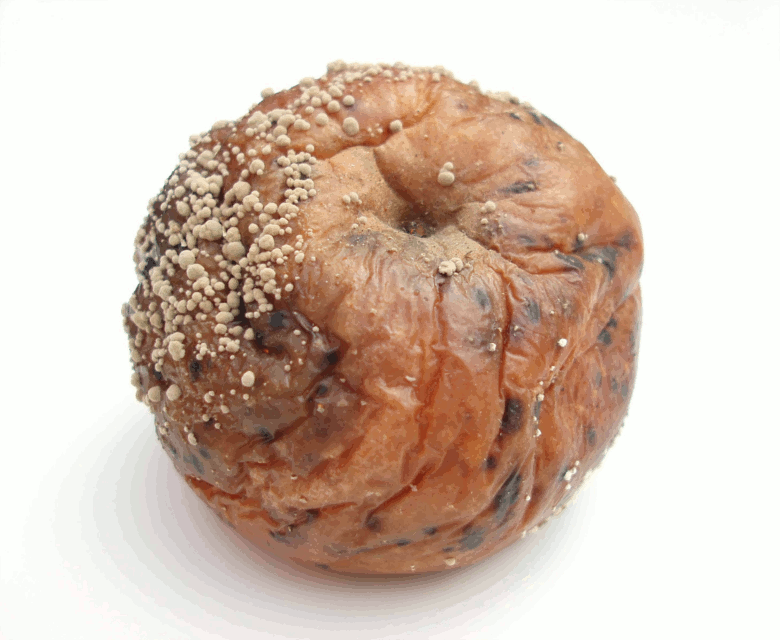

Fungus and yeast can adveresely affect human health. We all know what mould looks like but just to remind you we have included the occasional photo of a fungus in full bloom. Here is one now:

Not very nice is it? When you look at such a photo you do not immediatiely think 'what could that to my insides?' Rather you probably quite rightly think your immune system could handle that. However what happens when your immune system dials out? What happens when you live in an environment that is full of mould with spores circulating in the air constantly?
Read more...